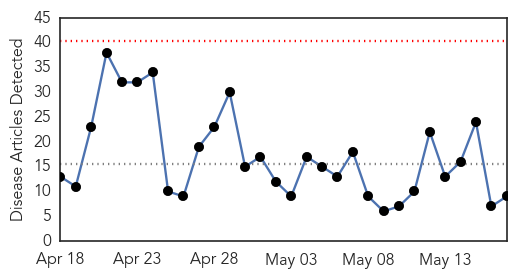
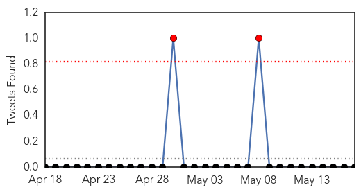
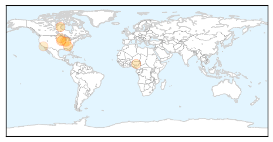
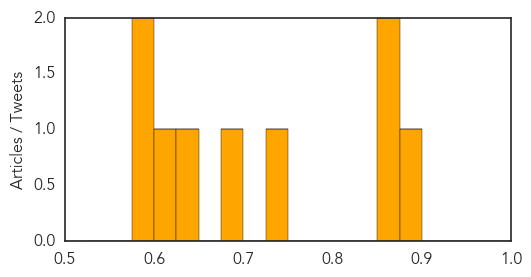
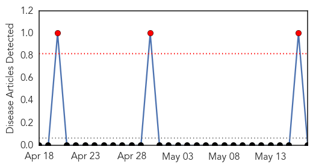

Influenza
30-Day Web Trend
0 alerts, 0 warnings

30-Day Twitter Trend
0 alerts, 0 warnings

Article Locations
Article Confidences
Top Articles:
- 0.898
- Over 100 influenza-related deaths in Alberta during 2014-15 season
- 0.871
- Tests confirm canine flu confirmed in Georgia linked to Chicago
- 0.855
- Terre Haute Tribune Star: Local News
- 0.746
- FAO Raises The Alarm Over Depletion Of Poultry, Food Insecurity
- 0.688
- Avian flu casts long shadow over Swift, Kandiyohi counties
- 0.647
- New Grassley, Ernst Urge USDA to Properly Deploy Resources to Fight Avian Flu
- 0.607
- Bird flu hits egg-producing Iowa hard; loss expected to be 25 million hens
- 0.589
- Bird flu hits hard in egg-producing Iowa; 25 million hens may be lost
- 0.577
- CDC Predicts How You Will Die Based On Where You Live
Top Tweets:
-
No tweets found for May 17, 2015
Hemmorhagic Fever
30-Day Web Trend
3 alerts, 0 warnings

30-Day Twitter Trend
0 alerts, 0 warnings

Article Locations

Article Confidences

Top Articles:
-
No articles found for May 17, 2015
Top Tweets:
-
No tweets found for May 17, 2015